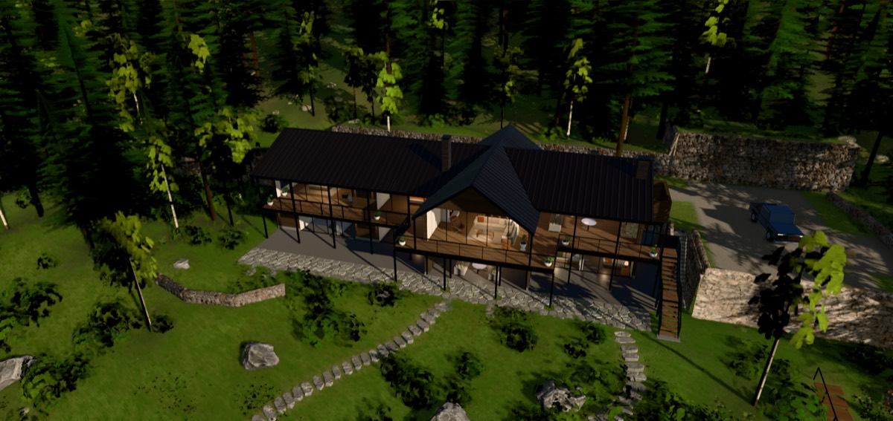

La casa en 3D
Hecha a partir de los planos del arquitecto. Se puede recorrer por dentro y por fuera, y ver cómo se va levantando.

Ver la casa
Girarla, entrar y caminar por dentro. Se puede cambiar la hora del día.
Cómo se construye
11 pasos, del terreno al techo, con las medidas en metros.
La primera vez tarda en cargar — hasta medio minuto, porque baja texturas y árboles. Después anda fluido.
Se ve mejor en computador; en el teléfono también funciona.
Algunas cosas no vienen en el plano y son supuestas: la altura de los pisos, la pendiente del techo, la escalera, los muebles y el terreno alrededor.